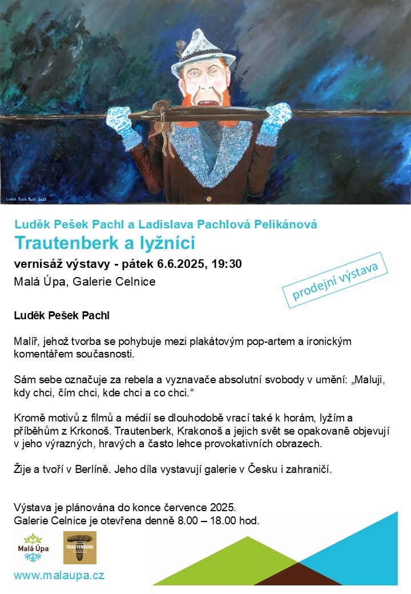
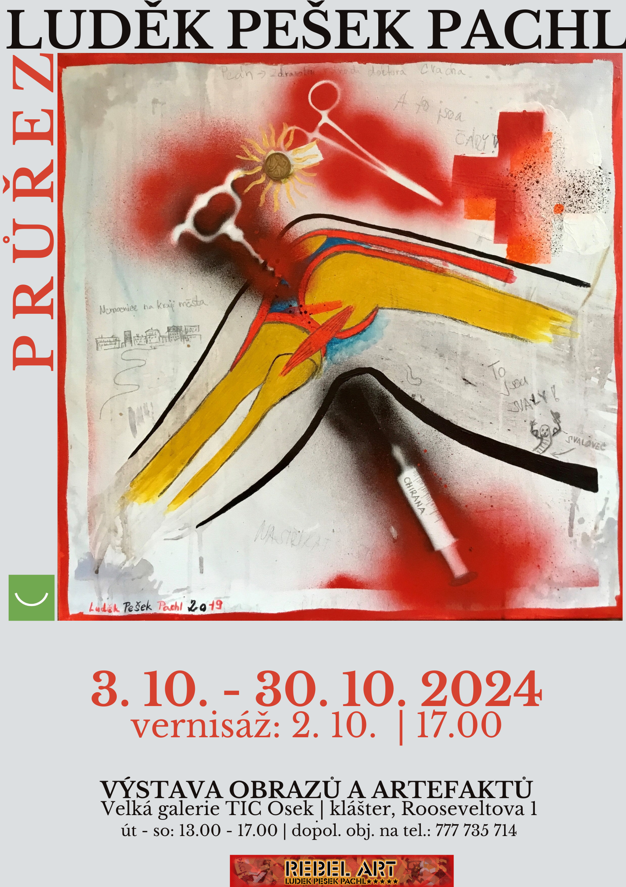
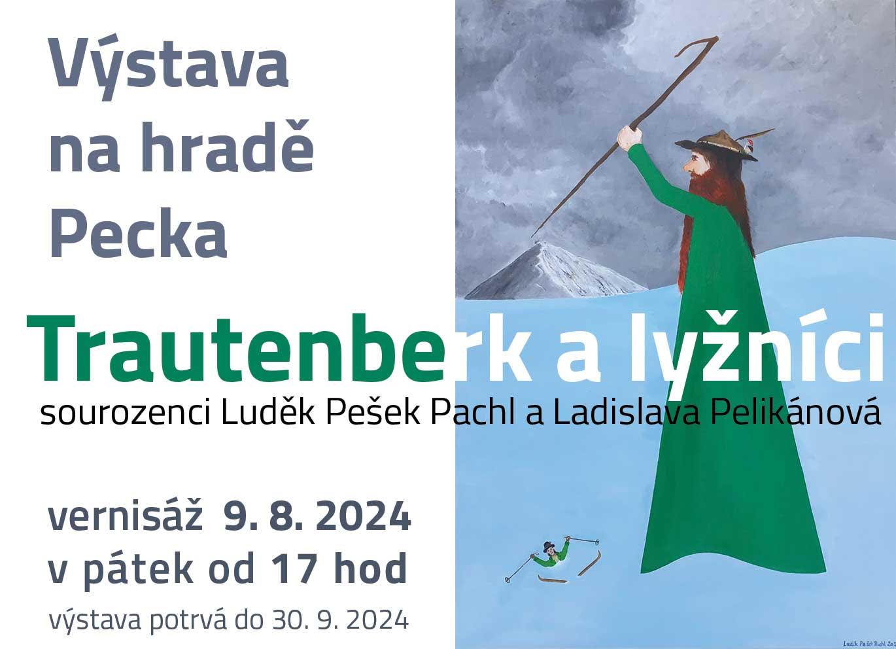
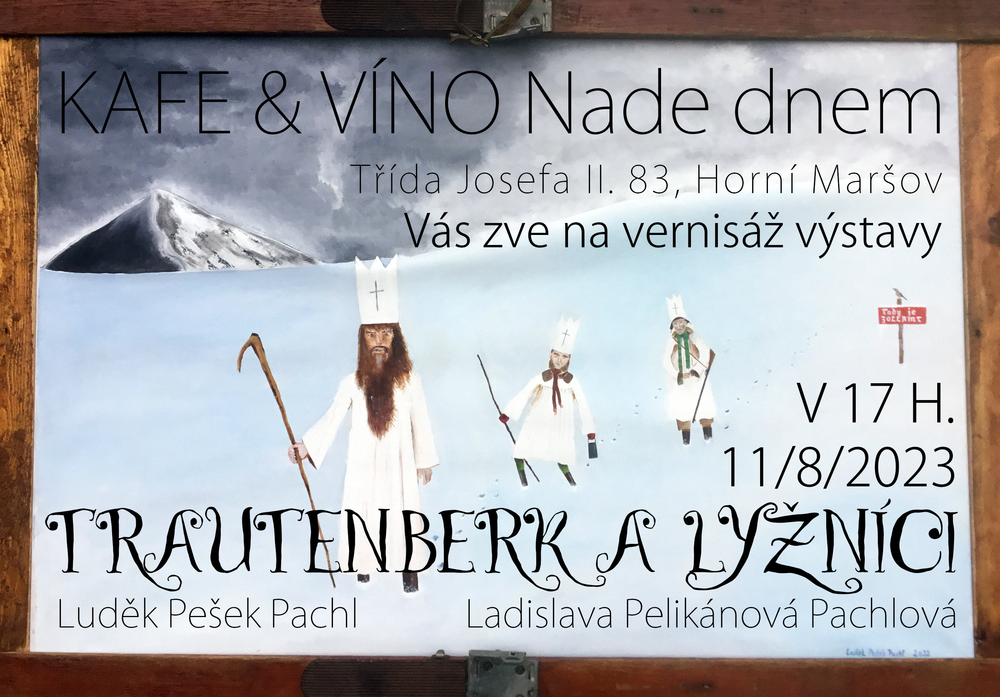
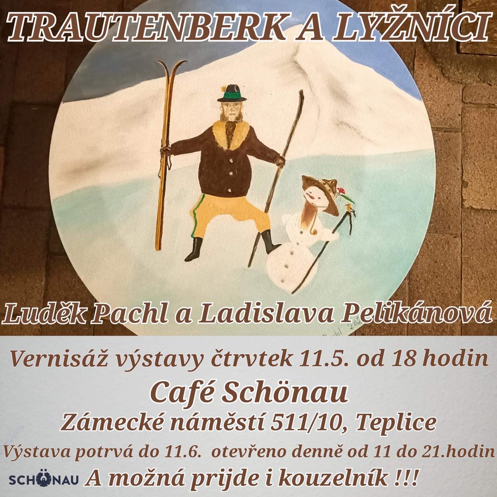
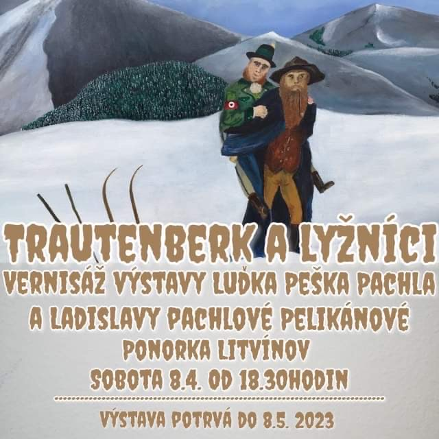
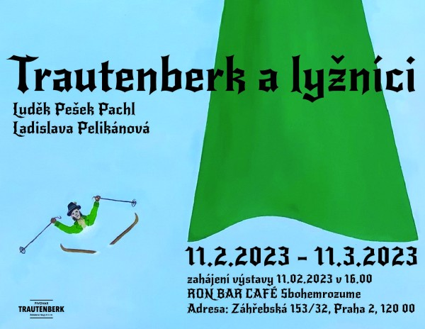

2025 1.6-31.7 (vernisáž 6.6 19:30), Trautenberk a lyžníci.
Galerie Celnice, Malá Úpa

2024 3.10-30.10 (vernisáž 2.10 17:00), Průřez.
Rooseveltova 1, 417 05 Osek u Duchcova

2024 9.8, Trautenberk a lyžníci.
Hrad Pecka, Pecka 1, 507 82 Pecka




2023 11.2 - 11.3, Trautenberk a lyžníci.
Ron Bar Café, Záhřebská 153/32, Praha 2

2014 1.10. – 16.11.
Schokolade trifft Kunst,
Programm, Berlin (DE)
2014 1.6. – 6.6.
12.OpenAirGallery 2014, Berlin (DE)
2012 9.11. – 9.12. Galerie Jáma 10, Ostrava (CZ)
2012 14.8. – 13.9. GalerieGallery Radniční sklípek, Litvínov (CZ)
2012 10.4. – 5.5. Klubovna 2.PATRO, PragPrague (CZ)
2012 3.3. - 31.5. Kater Mikesch, Berlin (DE)
2011 23.6. - 26.8. GalerieGallery U Radnice, Tábor (CZ)
2011 30.4. Jošt 2011, Brno (CZ)
2011 26.3. - 14.4. Factory Leathers Club, Berlin (DE)
10/11 5.11.2010 - 15.1.2011, Tribo tattoo studio & gallery, PragPrague (CZ)
2010 9.6. - 22.6. Botschaft der Tschechischen Republik, Berlin (DE)
2010 4.1. - 28.2. Americke centrum, Plzen (CZ)
2009 18.6. - 23.6. Project Write The Wall, Berlin (DE)
2009 18.6. - 23.6. Galerie Mánes, PragPrague (CZ)
2009 3.4. - 30.4., Galerie Hygienicka Stanice, PragPrague (CZ)
2009 10.1. - 30.1. Galerie ZERO, Berlin (DE)
08/09 5.12.2008 - 31.1.2009 Galerie Hygienicka Stanice, PragPrague (CZ)
08/09 10.12.2008 - 5.1.2009 Tiki Heart Cafe, Berlin (DE)
2008 1.11. - 23.11., Querschnitt 21, Bethanien/Kreuzberg, Berlin (DE)
2008 31.10. - 31.11., Galerie Hygienicka Stanice, PragPrague (CZ)
2008 15.10., Galerie Zia Maria, Berlin (DE)
2008 3.6. – 14.9., Veletrzni palac - National Gallery, PragPrague (CZ)
2008 16.5. - 17.5., Tattoo Convention, PragPrague (CZ)
2008 17.4. - 15.5., Tribo tattoo studio & gallery, PragPrague (CZ)
2008 11.4. - 9.5., Galerie Superplan, Berlin (DE)
2008 29.3., Galerie XXL, Louny (CZ)
07/08 5.12.2007 - 11.1.2008 Saarländische Galerie, Berlin - Mitte (DE)
2007 8.12. - 9.12., Czech ART Festival, Ceske Budejovice (CZ)
2007 10.11. - 2.12., Querschnitt 20, Haus Bethanien, Berlin (DE)
2007 15.11., Nu´uanu Gallery, Honolulu, Hawaii (USA)
2007 13.6. - 15.6., Mystic Skate Cup, Stvanice, PragPrague (CZ)
2007 22.6. - 24.6., 48 stunden Neuköln, Berlin - Neukölln (DE)
2007 17.4. - 1.6.,
Gallery ART FACTORY,
PragPrague (CZ)
2006 27.10. - 12.11., Galerie AVENTINSKA MANSARDA, PragPrague (CZ)
2006 3.6. - 30.6. c.k.Solnice, Ceske Budejovice (CZ)
2006 23.6 - 25.6., 48 stunden Neuköln, Berlin - Neukölln (DE)
2006 5.5. - 30.5., Cistercian Monastery / Kloster OsekCistercian Monastery Osek (CZ)
2006 11.1. - 12.2., TACHELES - Cafe Zapata, Berlin (DE)
2005 9.11. - 11.11., Art Fusion Tattoo Convention, Arena Treptow, Berlin (DE)
2005 26.8. - 9.9., Galerie Wallywoods, Kreuzberg, Berlin (DE)
2005 2.7. - 16.7., Kraut´s Cafe, Berlin (DE)
2005 10.6. - 12.6., 48 stunden Neukölln, CAFE LINUS, Berlin (DE)
2004 12.10. - 10.11., Galerie Pisecka Brana, PragPrague - Hradcany (CZ)
2004 June - September, Galerie Modry Hrozen, Litvinov (CZ)
2004 Juni, 48 stunden Neuköln, Berlin - Neukölln (DE)
2004 Mai, Leander Cafe, Potsdam (DE)
2003 Voodoo Galerie, Berlin (DE)
2003 Kulturfestival "prag-o-mania", Dresden (DE)
2003 September, Kunstfestival Spektrale, Berlin - Friedrichshain (DE)
2003 June, 48h Neukölln, Berlin - Neukölln (DE)
2003 March, Mad & Crazy, Berlin - Prenzlauer Berg (DE)
2003 February, Semtex, Berlin - Friedrichshain (DE)
2002 October, Franken, Berlin - Kreuzberg (DE)
2002 June, Der Club, Berlin - Prenzlauer Berg (DE)
2002 May, La Fabrique, Berlin - Friedrichshain (DE)
2002 Galerie Engler & Pieper, Berlin - Prenzlauer Berg (DE)
2001 Galerie Kunststück, Berlin - Prenzlauer Berg (DE)
2001 Therezienstad (CZ)
2000 Acud Galerie, Berlin - Prenzlauer Berg (DE)
2000 Drugstore, Berlin - Schöneberg (DE)
1997 Teilnahme an einem internat. Kunstprojekt in Toulouse (F)Participation in an international art project in Toulouse (F)
1996 Litvinov (CZ)
1995 Most (CZ)